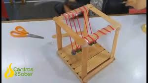
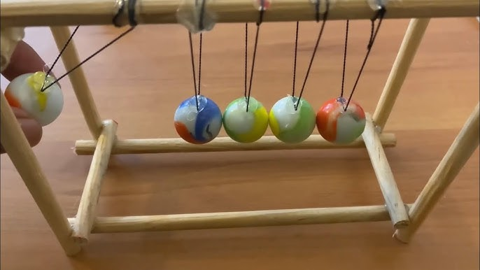
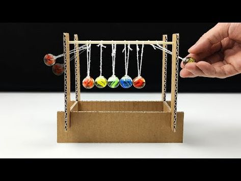

Los péndulos de Newton son un dispositivo que demuestra la conservación del momento y la energía. Este experimento se puede realizar con materiales reciclables y es una excelente manera de aprender sobre física de una manera práctica y divertida.
Los péndulos de Newton ilustran varios conceptos físicos, incluyendo:
Matemáticamente, el comportamiento del péndulo se puede describir mediante la ecuación del movimiento armónico simple, donde la frecuencia de oscilación depende de la longitud del péndulo y la gravedad.
A continuación, se detalla el proceso para construir un péndulo de Newton utilizando materiales reciclables:
1. Corta el hilo en cinco piezas de igual longitud.
2. Ata cada bola al hilo, asegurándote de que cuelguen a la misma altura.
3. Fija el otro extremo del hilo al soporte, asegurándote de que las bolas cuelguen libremente.
4. Asegúrate de que las bolas estén alineadas y a la misma distancia entre sí.
5. ¡Tu péndulo de Newton está listo para ser probado!


